前端知识体系-全栈系列
前端知识体系
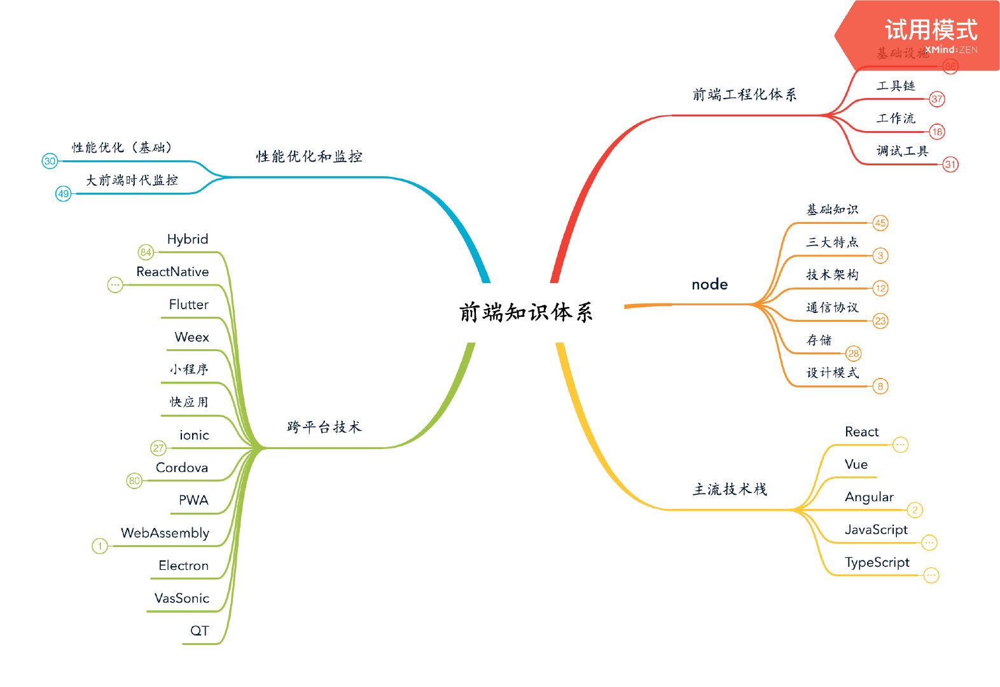
前端工程化体系
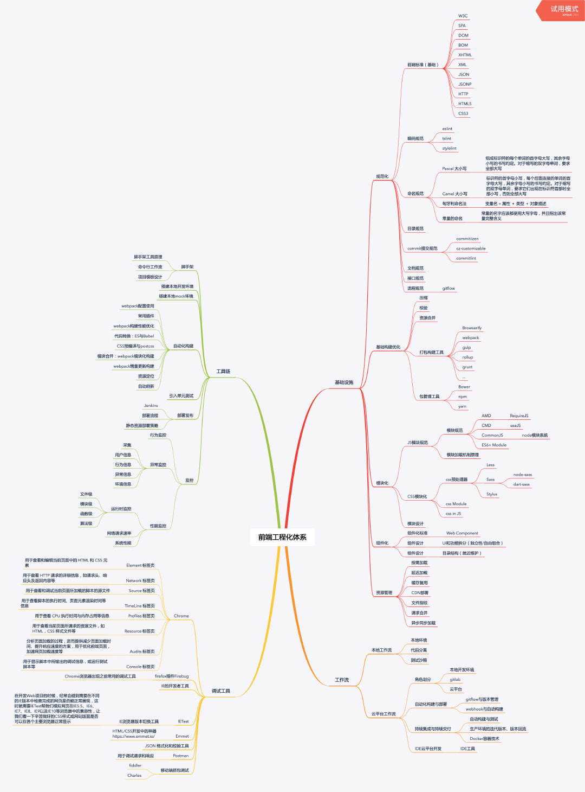
node
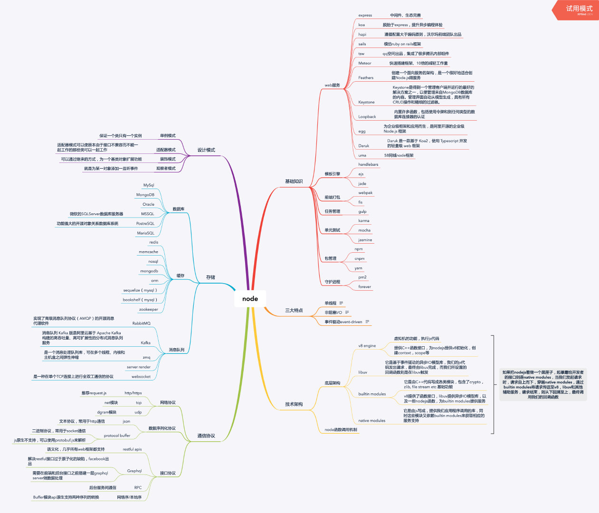
主流技术栈
Angular

JavaScript
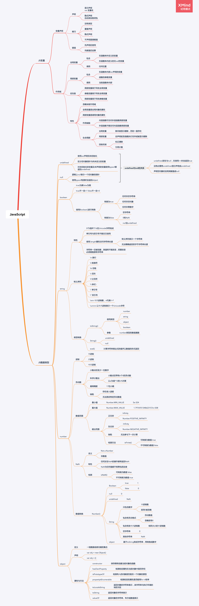
React

TypeScript
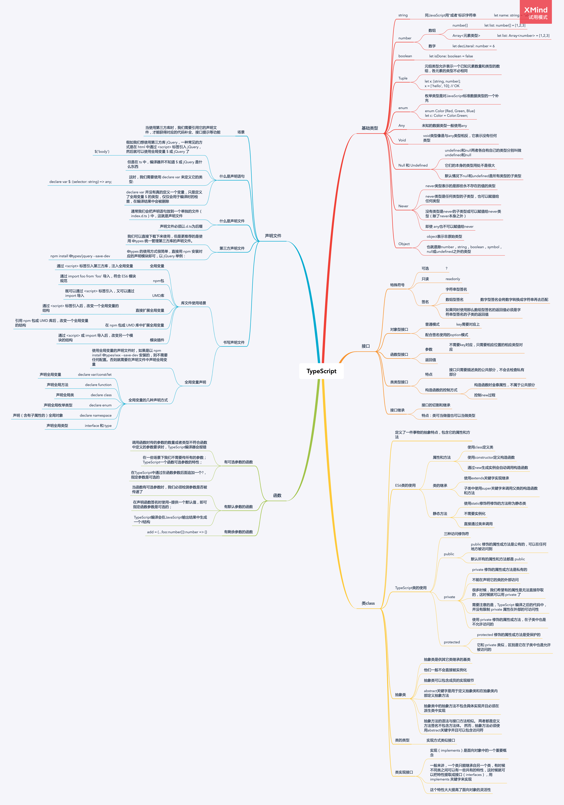
Vue

跨平台技术
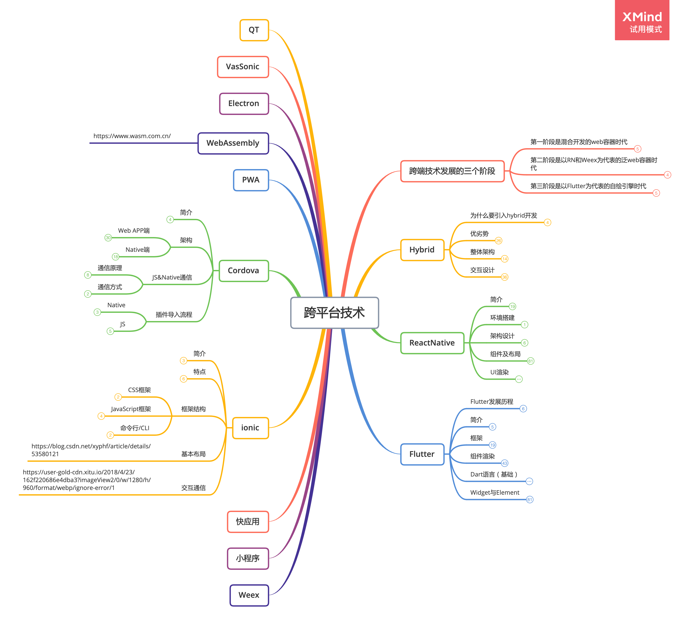
Cordova
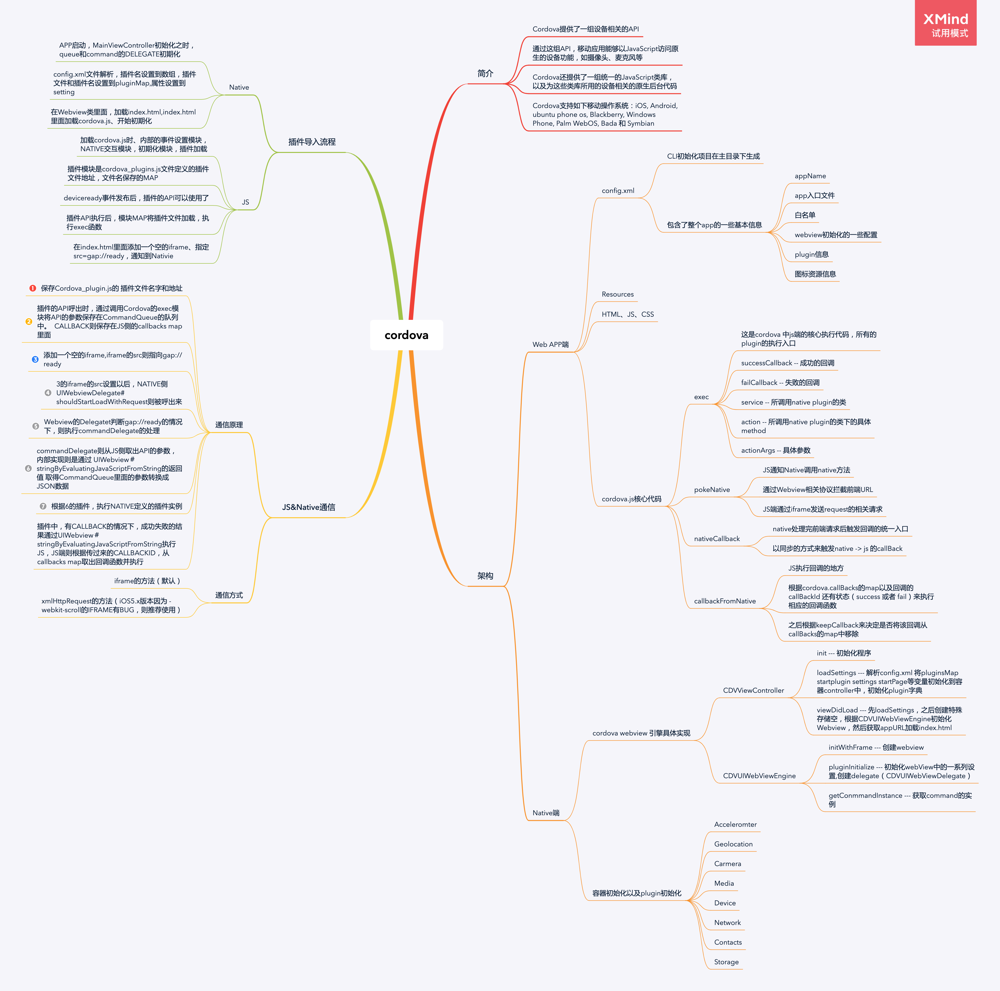
Flutter

Hybrid
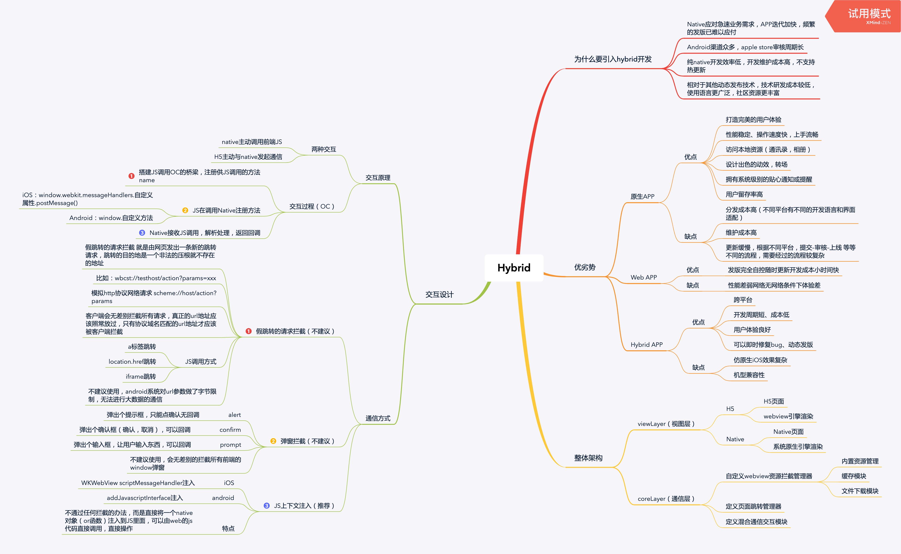
ionic
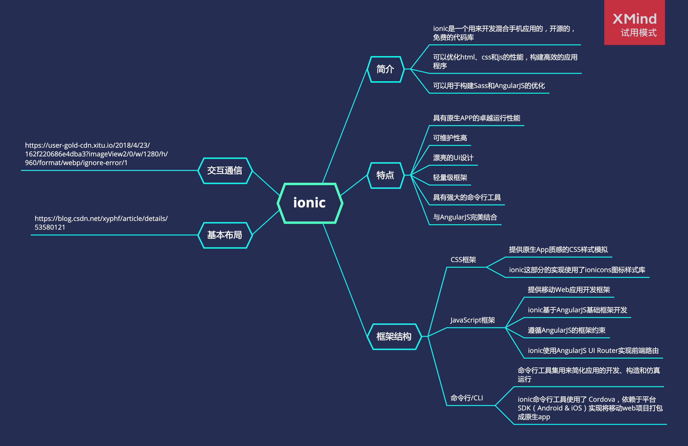
ReactNative

跨端技术发展的三个阶段
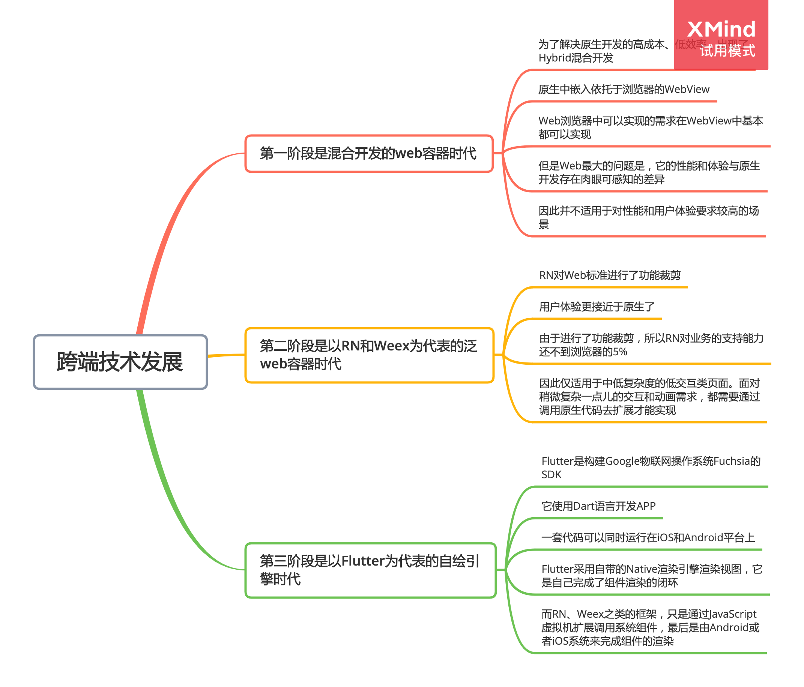
weex
小程序
快应用
性能优化和监控
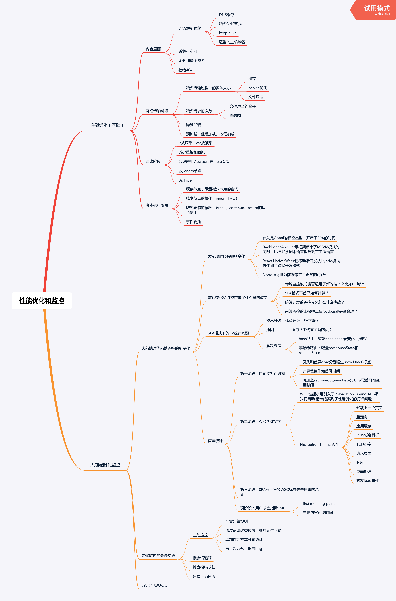
前端知识体系（大纲）
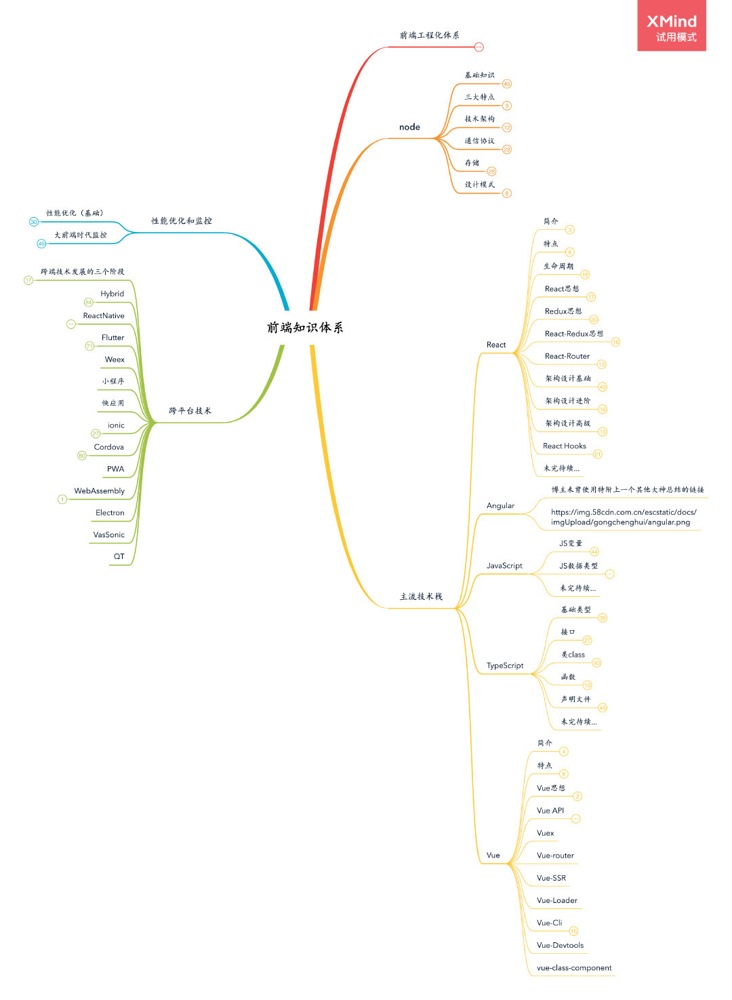
前端工程化体系
基础设施
规范化
前端标准（基础）
W3C
SPA
DOM
BOM
XHTML
XML
JSON
JSONP
HTTP
HTML5
CSS3
编码规范
eslint
- tslint
- stylelint
- 命名规范
- Pascal 大小写
- 组成标识符的每个单词的首字母大写，其余字母小写的书写约定。对于缩写的双字母单词，要求全部大写
- Camel 大小写
- 标识符的首字母小写，每个后面连接的单词的首字母大写，其余字母小写的书写约定。对于缩写的双字母单词，要求它们出现在标识符首部时全部小写，否则全部大写
- 匈牙利命名法
- 变量名 = 属性 ＋ 类型 ＋ 对象描述
- 常量的命名
- 常量的名字应该都使用大写字母，并且指出该常量完整含义
- 目录规范
- commit提交规范
- commitiizen
- cz-customizable
- commitlint
- 文档规范
- 接口规范
- 流程规范
基础构建优化
压缩
校验
资源合并
打包构建工具
Browserify
webpack
gulp
rollup
grunt
…
包管理工具
Bower
npm
yarn
模块化
JS模块规范
模块规范
AMD
RequireJS
CMD
seaJS
CommonJS
node模块系统
ES6+ Module
模块加载机制原理
CSS模块化
css预处理器
Less
Sass
node-sass
dart-sass
Stylus
css Module
css in JS
模块设计
组件化
组件化标准
Web Component
组件设计
UI和功能拆分（独立性/自由组合）
组件设计
目录结构（就近维护）
资源管理
按需加载
延迟加载
缓存复用
CDN部署
文件指纹
请求合并
异步同步加载
工具链
脚手架
脚手架工具原理
命令行工作流
项目模板设计
搭建本地开发环境
搭建本地mock环境
自动化构建
webpack配置使用
常用插件
webpack构建性能优化
代码转换：ES与Babel
CSS预编译与postcss
模块合并：webpack模块化构建
webpack增量更新构建
资源定位
自动刷新
引入单元测试
部署发布
Jenkins
部署流程
静态资源部署策略
监控
行为监控
异常监控
采集
用户信息
行为信息
异常信息
环境信息
性能监控
运行时监控
文件级
模块级
函数级
算法级
网络请求速率
系统性能
工作流
本地工作流
本地环境
代码分离
测试沙箱
云平台工作流
角色划分
本地开发环境
gitlab
云平台
自动化构建与部署
gitflow与版本管理
webhook与自动构建
持续集成与持续交付
自动构建与测试
生产环境的迭代版本、版本回流
Docker容器技术
IDE云平台开发
IDE工具
调试工具
Chrome
Element 标签页
用于查看和编辑当前页面中的 HTML 和 CSS 元素
Network 标签页
用于查看 HTTP 请求的详细信息，如请求头、响应头及返回内容等
Source 标签页
用于查看和调试当前页面所加载的脚本的源文件
TimeLine 标签页
用于查看脚本的执行时间、页面元素渲染时间等信息
Profiles 标签页
用于查看 CPU 执行时间与内存占用等信息
Resource 标签页
用于查看当前页面所请求的资源文件，如 HTML，CSS 样式文件等
Audits 标签页
分析页面加载的过程，进而提供减少页面加载时间、提升响应速度的方案，用于优化前端页面，加速网页加载速度等
Console 标签页
用于显示脚本中所输出的调试信息，或运行测试脚本等
firefox插件Firebug
Chrome浏览器出现之前常用的调试工具
IE的开发者工具
IETest
IE浏览器版本切换工具
在开发Web项目的时候，经常会碰到需要在不同的IE版本中检查完成的网页是否能正常展现，这时就需要IETest帮我们模拟网页在IE5.5、IE6、IE7、IE8、IE9以及IE10等浏览器中的兼容性，让我们看一下辛苦做好的CSS样式或网站版面是否可以在各个主要浏览器正常显示
Emmet
HTML/CSS开发中的神器
https://www.emmet.io/
JSON 格式化和校验工具
Postman
用于调试请求和响应
移动端抓包调试
fiddler
Charles
node
基础知识
web服务
express
中间件、生态完善
koa
脱胎于express，提升异步编程体验
hapi
遵循配置大于编码原则，沃尔玛前端团队出品
sails
模仿ruby on rails框架
tsw
qq空间出品，集成了很多腾讯内部组件
Meteor
快速搭建框架、10倍的减轻工作量
Feathers
创建一个面向服务的架构，是一个很好地适合创建Node.js微服务
Keystone
Keystone是得到一个管理客户端并运行的最好的解决方案之一，以便管理来自MongoDB数据库的内容。管理界面自动从模型生成，具有所有CRUD操作和精细的过滤器。
Loopback
内置许多函数，包括使用令牌和到任何类型的数据库连接器的认证
egg
为企业级框架和应用而生，是阿里开源的企业级 Node.js 框架
Daruk
Daruk 是一款基于 Koa2，使用 Typescript 开发的轻量级 web 框架
uma
58同城node框架
模板引擎
handlebars
ejs
jade
前端打包
webpak
fis
任务管理
gulp
单元测试
karma
mocha
jasmine
包管理
npm
cnpm
yarn
守护进程
pm2
forever
三大特点
单线程
Node.js不为每个客户连接创建一个新的线程，而仅仅使用一个线程。当有用户连接了，就触发一个内部事件，通过非阻塞I/O、事件驱动机制，让Node.js程序宏观上也是并行的
非阻塞I/O
由于Node.js中采用了非阻塞型I/O机制，因此在执行了访问数据库的代码之后，将立即转而执行其后面的代码，把数据库返回结果的处理代码放在回调函数中，从而提高了程序的执行效率。
当某个I/O执行完毕时，将以事件的形式通知执行I/O操作的线程，线程执行这个事件的回调函数。为了处理异步I/O，线程必须有事件循环，不断的检查有没有未处理的事件，依次予以处理。
阻塞模式下，一个线程只能处理一项任务，要想提高吞吐量必须通过多线程。而非阻塞模式下，一个线程永远在执行计算操作，这个线程的CPU核心利用率永远是100%。所以，这是一种特别有哲理的解决方案：与其人多，但是好多人闲着；还不如一个人玩命，往死里干活儿。
事件驱动event-driven
在Node中，在一个时刻，只能执行一个事件回调函数，但是在执行一个事件回调函数的中途，可以转而处理其他事件（比如，又有新用户连接了），然后返回继续执行原事件的回调函数，这种处理机制，称为“事件环”机制。
Node.js底层是C++（V8也是C++写的）。底层代码中，近半数都用于事件队列、回调函数队列的构建
技术架构
底层架构
v8 engine
虚拟机的功能，执行js代码
提供C++函数接口，为nodejs提供v8初始化，创建context，scope等
libuv
它是基于事件驱动的异步IO模型库，我们的js代码发出请求，最终由libuv完成，而我们所设置的回调函数则是在libuv触发
builtin modules
它是由C++代码写成各类模块，包含了crypto，zlib, file stream etc 基础功能
v8提供了函数接口，libuv提供异步IO模型库，以及一些nodejs函数，为builtin modules提供服务
native modules
它是由js写成，提供我们应用程序调用的库，同时这些模块又依赖builtin modules来获取相应的服务支持
node函数调用机制
通信协议
网络协议
http/https
推荐request.js
tcp
net模块
udp
dgram模块
数据序列化协议
json
文本协议，常用于http通信
protocol buffer
二进制协议，常用于socket通信
js原生不支持，可以使用protobuf.js来解析
接口协议
restful apis
语义化，几乎所有web框架都支持
Graphql
解决restful接口过于原子化的缺陷，facebook出品
需要在前端和后台接口之前搭建一层graphql server做数据处理
RPC
后台服务间通信
网络序/本地序
Buffer模块api原生支持两种序列的转换
存储
数据库
MySql
MongoDB
Oracle
MSSQL
微软的SQLServer数据库服务器
PostreSQL
功能强大的开源对象关系数据库系统
MariaSQL
缓存
redis
memcache
nosql
mongodb
orm
sequelize（mysql）
bookshelf（mysql）
zookeeper
消息队列
RabbitMQ
实现了高级消息队列协议（AMQP）的开源消息代理软件
Kafka
消息队列 Kafka 版是阿里云基于 Apache Kafka 构建的高吞吐量、高可扩展性的分布式消息队列服务
zmq
是一个消息处理队列库，可在多个线程、内核和主机盒之间弹性伸缩
server render
websocket
是一种在单个TCP连接上进行全双工通信的协议
设计模式
单例模式
保证一个类只有一个实例
适配器模式
适配器模式可以使原本由于接口不兼容而不能一起工作的那些类可以一起工作
装饰模式
可以通过继承的方式，为一个基类对象扩展功能
观察者模式
就是为某一对象添加一监听事件
主流技术栈
React
简介
React 是一个 MVC 框架
React 主要是用来构建 UI
React 是起源于Facebook的内部项目，用于构建 Instagram 网站，在 2013.05 开源
特点
声明式
使用 React 编写UI界面和写HTML几乎一样
高效
React通过对DOM的模拟，最大限度地减少与DOM的交互
灵活
React可以与已知的库或框架很好地配合
生命周期
constructor
构造函数
componentWillMount
在渲染前调用,在客户端也在服务端（高版本已废弃）
componentDidMount
在第一次渲染后调用，只在客户端
componentWillReceiveProps
在组件接收到一个新的 prop (更新后)时被调用。这个方法在初始化render时不会被调用
shouldComponentUpdate
返回一个布尔值。在组件接收到新的props或者state时被调用。在初始化时或者使用forceUpdate时不被调用
componentWillUpdate
在组件接收到新的props或者state但还没有render时被调用。在初始化时不会被调用
componentDidUpdate
在组件完成更新后立即调用。在初始化时不会被调用
componentWillUnmount
在组件从 DOM 中移除的时候立刻被调用
React思想
组件编写顺序
1.组件划分原则
解耦
复用
适度
2.编写静态组件
3.分析State
哪些是State
对组件进行两个灵魂质问
对State集合进行检查和去重
State保存的位置
单一状态
状态上移
添加交互行为
mock方式
server
public
Redux思想
使用redux是在解决什么问题
问题原因：数据状态包括API数据，本地数据和UI状态等随着项目扩大变的管理复杂
解决问题的目的：防止管理状态失控
解决问题的手段：使用redux将视图层和状态管理层从逻辑上解耦
State
集中管理，全局唯一
不可变性
定义原则与React State定义原则相同
Action
普通Acion
ActionCreators
ActionTypes
异步Action
异步action的创建
请求开始action
请求成功action
请求失败action
拓展reducer
请求数据相关的state数据结构的变化
请求数据相关的reducer内容扩充
集成redux-thunk
问题原因：净化react组件的代码，想将数据请求放在action当中做
解决问题的目的：实现异步Action
解决问题的手段：使用redux-thunk实现异步Action，抽离react中的数据请求代码
Reducer
combineReducers
Store
redux-devtools
浏览器插件
项目依赖库
React-Redux思想
使用react-redux是在解决什么问题
问题原因：reactUI层和redux状态层的相关代码冗杂在react组件中
解决问题的目的：既能链接reactUI层和redux状态层，又不让两者代码糅合
解决问题的手段：使用react-redux将视图层和状态管理层从代码上解耦
功能
Provider组件
connect高阶HOC组件
map api
容器性组件和展示性组件
关注点
对redux感知
读数据
写数据
如何创建
流程图总结
https://www.taopoppy.cn/react_redux_jiagou_react_redux.png
React-Router
服务端路由和客户端路由的区别
服务端路由：访问http://a就返回a.html，访问http://b就返回b.html，是服务器根据不同的路由返回不同的页面
客户端路由：无论访问什么路径，返回的页面信息都是相同的，是通过js通过判断路径的不同来渲染不同的组件而已，所以叫做客户端路由
BrowserRouter和HashRouter区别
之前说react-router-dom是将react-route和web-api做绑定，这些web-api具体指的就是HTML5 history
API，利用这些pushState、replaceState等方法实现在客户端实现路由的操作
哈希路由是使用url的hash部分作为路由信息，是通过使用页面不同的哈希和不同的组件之间做映射来完成的，哈希的出现主要为了兼容老版本浏览器，因为老版本的浏览器不支持history的API，所以通过哈希的变化来实现路由的变化。但是这样的情况在现在已经很少了，而且哈希的本身含义就是页面的定位，其逻辑也不符合路由的需求
路由渲染组件的三种方式
component
render
children
全新思维
一切皆组件
动态路由离散式声明法
架构设计基础
React+Redux项目结构组织方式
type（按照类型）
定义
类型指的是该文件在项目当中充当的角色类型
特点
优点
目录结构清晰却明确，功能文件比较紧凑
缺点
新添功能需要在不同的文件中做修改
不利于多人合作下的代码表写和提交合并
function（按照功能模块）
定义
功能指的是按照功能或者页面将相关的文件写在同一个文件夹
特点
优点
有利于新功能的开发和拓展
缺点
容易造成store当中存在大量重复性的数据
同一状态在不同的模块中会有不一致的风险
Ducks（鸭子类型）
定义
将应用的状态作为模块的划分依据
特点
目录结构清晰紧凑，添加新功能只需添加新模块文件即可
组件需要任何状态只需要引入对应的state模块文件即可
三种设计Redux-State的依据
API为依据
定义
以后端API返回数据结构作为State的数据结构
缺点
大量数组类型的结构会造成重复数据的存在
UI为依据
定义
不同的UI显示都对应一份State
缺点
State数量过多，容易出现错误的State和重复的State
数据库基本原则为依据
整个应用的状态按照领域分成若干子State，子State之间不能保存重复的数据
State以键值对的结构存储数据，以记录的key/Id作为记录的索引，记录中的其他字段都依赖于索引
State中不能保存可以通过已有数据计算而来的数据，即State中的字段不互相依赖
架构设计进阶
selector函数
使用selector是在解决什么问题
问题原因：redux和容器性组件存在部分耦合，redux中的state结构变化会影响后者
解决问题的目的：实现react容器性组件和redux状态层的终极解耦
解决问题的手段：selectors是作为不同层级之间的接口不仅彻底解耦了层级，还使得不同层级通过接口进行安全交互和通讯得以实现
selector带来的好处
selector限制了层级的内部变化影响范围最多到接口
selector防止不同层级互相知道内部结构的风险
selector可以负责计算和过滤的工作
redux中间件（Middleware）
middleware的写法
middleware的本质
redux增强器（Enhancer）
Enhancer的写法
Enhancer和Middleware的关系
实际上middleware是store
enhancer的一种，中间件虽然比较低阶，但是它约束了我们的行为，而增强器enhancer虽然更加灵活，但是破坏redux底层结构的风险更大，所以如果你对redux整体的结构和逻辑都不是太熟悉，尽量就别用
架构设计高级
reducer如何返回新的state对象
Object.assign
ES6扩展语法
Immutable
Immutable的常规使用
Immutable的优化
Immutable的选择考虑
对项目的整体侵入性很强，我们需要改的地方很多，如果你的项目不是很大，且store当中的数据层级不是很多，结构不复杂，不推荐使用的，我们一定要根据需求去搭建架构，去决定是否使用某些工具
Reselect
使用Reselect是解决什么问题
store当中的state发生了变化，每个容器型组件的mapStateToProps都要重新执行，产生的结果就是上述的这些selectors函数也要重复执行，也就导致了重复计算，使用Reselect创建的selectors函数，只要使用到的state没有发生变化，这个selectors函数就不会去重新计算，比如getVisibleTodos函数使用到了state.filter和state.todos，修改state.text并不会影响state.filter和state.todos，所以getVisibleTodos函数也就不会重复执行
Reselect的常规使用
Reselect的选择考虑
React Hooks
特性
hooks 的出现使得你可以在不编写 class 的情况下使用状态管理以及其它 React 的特性
Hooks API
useState
用来承担与类组件中的 state 一样的作用，组件内部的状态管理
useEffect
可以用来模拟生命周期，即可以完成某些副作用
useLayoutEffect
它与 useEffect 的用法完全一样，作用也基本相同，唯一的不同在于执行时机，它会在所有的 DOM 变更之后同步调用 effect，可以使用它来
useReducer
useState 的替代方案，它接收一个 (state, action) => newState 的 reducer 处理函数，并返回当前的 state 和 配套的 dispatch 方法。使用方法与 redux 非常相似
useCallback
它有的作用：性能优化，父组件更新，传递给子组件的函数指针不会每次都改变，只有当依赖项发生改变的时候才会改变指针。避免了子组件的无谓渲染
它的本质是对函数依赖进行分析，依赖变更时才重新执行。
useMemo
useMemo 用于缓存一些耗时的计算结果（返回值），只有当依赖项改变时才重新进行计算
useContext
专门为函数组件提供的 context hook API，可以更加方便地获取 context 的值
useContext(MyContext) 接收一个 context 对象，当前获取到的值由上层组件中距离最近的 的 value 决定
useRef
useRef 返回一个可变的 ref 对象，其 current 属性被初始化为传入的参数。返回的 ref 对象在组件的整个生命周期内保持不变
未完待续…
Angular
博主未曾使用特附上一个其他大神总结的链接
https://img.58cdn.com.cn/escstatic/docs/imgUpload/gongchenghui/angular.png
JavaScript
JS变量
变量声明
声明
显示声明
var 变量名
隐式声明
自动添加到闭包
陋习
没有类型
重复声明
隐式声明
不声明直接赋值
提倡
先声明后使用
先赋值后运算
作用域
全局变量
包含
在函数体外定义的变量
在函数体内定义的无var的变量
调用
任何位置
局部变量
包含
在函数体内部var声明的变量
函数的参数变量
调用
当前函数体内部
优先级
局部变量高于同名全局变量
参数变量高于同名全局变量
局部变量高于同名参数变量
特性
忽略块级作用域
全局变量是全局对象的属性
局部变量是调用对象的属性
作用域链
内层函数可访问外层函数局部变量
外层函数不能访问内层函数局部变量
生命周期
全局变量
除非被显示删除，否则一直存在
局部变量
自声明起至函数执行完毕或被显示删除
回收机制
标记清除
引用计数
JS数据类型
undefined
使用var声明但未初始化
区分空对象指针与尚未定义的变量
对未初始化的变量及未声明的变量使用typeof都返回undefined
null
逻辑上null表示一个空对象的指针
使用typeof检测时会返回object
boolean
true为真false为假
true不一定=1 false不一定=0
使用Boolean()进行转换
转换为true
任何非空字符串
任何非空对象
任何非零数字
转换为false
空字符串
0和NaN
null及undefined
string
特性
0个或多个16位Unicode字符组成
单引号与双引号不能交叉使用
使用.length属性访问字符串长度
转义序列表示一个字符串
无法精确返回双字节字符串长度
字符串一旦被创建，其值将不能改变，若要改变必须销毁原有字符串
转义序列
\n 换行
\t 制表符
\b 空格
\r 回车
\f 分页符
\ 斜杠\
’ 单引号
" 双引号
\xnn 十六进制数，n代表0~F
\unnnn 以十六进制表示一个Unicode字符
类型转换
toString()
使用类型
number
string
object
boolean
参数
number类型的数值基数
String()
undefined
null
evel()
计算字符串表达式的值并以数值的形式返回
number
进制
十进制
八进制
十六进制
浮点数
小数点后至少一位数字
科学计数法
小数点后带有6个0的浮点数
以e为底*10的±N次幂
最高精度
17位小数
缺陷
存在舍入误差
无法测试特定浮点数值
数值范围
最小值
Number.MIN_VALUE
5e-324
最大值
Number.MAX_VALUE
1.7976931348623157e+308
超出范围
正无穷
Infinity
Number.POSITIVE_INFINITY
负无穷
-Infinity
Number.NEGATIVE_INFINITY
缺陷
无法参与下一次计算
检测方法
isFinite()
可转换为数值 true
不可转换为数值 false
NaN
含义
Not a Number
非数值
特性
任何涉及NaN的操作都将返回NaN
NaN与任何值都不相等包括自身
检测
isNaN()
可转换为数值 false
不可转换为数值 true
数值转换
Number()
Boolean
true
1
false
0
null
0
undefined
NaN
String
只包含数字
十进制数
前导0被忽略
包含有浮点格式
浮点数值
忽略前导0
包含有效十六进制数
相同大小的十进制数
空字符串
0
其他字符串
NaN
object
基于toString转成字符串，再转换成数字
object
定义
一组数据或者功能的集合
声明
var obj = new Object()
var obj = {}
属性与方法
constructor
保存拥有创建当前对象的函数
hasOwnProperty
检测给定属性在当前对象中是否存在
isPrototypeOf
检测传入的对象是否是另一个对象的原型
propertyIsEnumerable
检测给定的属性是否能用for-in枚举
toLocaleString
返回对象的字符串表示，该字符串与执行环境的地区对应
toString
返回对象的字符串表示
valueOf
返回对象的字符串、布尔或数值表示
未完待续…
TypeScript
基础类型
string
同JavaScript用"或者’标识字符串
let name: string = “abc”
number
数组
number[]
let list: number[] = [1,2,3]
Array<元素类型>
let list: Array = [1,2,3]
数字
let decLiteral: number = 6
boolean
let isDone: boolean = false
Tuple
元组类型允许表示一个已知元素数量和类型的数组，各元素的类型不必相同
let x: [string, number];
x = [‘hello’, 10]; // OK
enum
枚举类型是对JavaScript标准数据类型的一个补充
enum Color {Red, Green, Blue}
let c: Color = Color.Green;
Any
未知的数据类型一般使用any
Void
void类型像是与any类型相反，它表示没有任何类型
Null 和 Undefined
undefined和null两者各自有自己的类型分别叫做undefined和null
它们的本身的类型用处不是很大
默认情况下null和undefined是所有类型的子类型
Never
never类型表示的是那些永不存在的值的类型
never类型是任何类型的子类型，也可以赋值给任何类型
没有类型是never的子类型或可以赋值给never类型（除了never本身之外）
即使 any也不可以赋值给never
Object
object表示非原始类型
也就是除number，string，boolean，symbol，null或undefined之外的类型
接口
特殊符号
可选
?
只读
readonly
签名
字符串型签名
数组型签名
数字型签名会将数字转换成字符串再去匹配
如果同时使用那么数组型签名的返回值必须是字符串型签名的子类的返回值
对象型接口
普通模式
key需要对应上
配合签名使用的option模式
函数型接口
参数
不需要key对应，只需要相应位置的相应类型对应
返回值
类类型接口
特点
接口只需要描述类的公共部分，不会去检查私有部分
构造函数的控制方式
构造函数时金泰属性，不属于公共部分
控制new过程
接口继承
接口的切割和继承
特点：类可当做值也可以当做类型
类class
定义了一件事物的抽象特点，包含它的属性和方法
ES6类的使用
属性和方法
使用class定义类
使用constructor定义构造函数
通过new生成实例会自动调用构造函数
类的继承
使用extends关键字实现继承
子类中使用super关键字来调用父类的构造函数和方法
静态方法
使用static修饰符修饰的方法称为静态类
不需要实例化
直接通过类来调用
TypeScript类的使用
三种访问修饰符
public
public 修饰的属性或方法是公有的，可以在任何地方被访问到
默认所有的属性和方法都是 public
private
private 修饰的属性或方法是私有的
不能在声明它的类的外部访问
很多时候，我们希望有的属性是无法直接存取的，这时候就可以用 private 了
需要注意的是，TypeScript 编译之后的代码中，并没有限制 private 属性在外部的可访问性
使用 private 修饰的属性或方法，在子类中也是不允许访问的
protected
protected 修饰的属性或方法是受保护的
它和 private 类似，区别是它在子类中也是允许被访问的
抽象类
抽象类是供其它类继承的基类
他们一般不会直接被实例化
抽象类可以包含成员的实现细节
abstract关键字是用于定义抽象类和在抽象类内部定义抽象方法
抽象类中的抽象方法不包含具体实现并且必须在派生类中实现
抽象方法的语法与接口方法相似。 两者都是定义方法签名不包含方法体。 然而，抽象方法必须使用abstract关键字并且可以包含访问符
类的类型
实现方式类似接口
类实现接口
实现（implements）是面向对象中的一个重要概念
一般来讲，一个类只能继承自另一个类，有时候不同类之间可以有一些共有的特性，这时候就可以把特性提取成接口（interfaces），用 implements 关键字来实现
这个特性大大提高了面向对象的灵活性
函数
有可选参数的函数
调用函数时传的参数的数量或者类型不符合函数中定义的参数要求时，TypeScript编译器会报错
在一些场景下我们不需要传所有的参数；TypeScript一个函数可选参数的特性；
在TypeScript中通过在函数参数后面追加一个?，指定参数是可选的
有默认参数的函数
当函数有可选参数时，我们必须检测参数是否被传递了
在声明函数签名时使用=提供一个默认值，即可指定函数参数是可选的；
TypeScript编译会在JavaScript输出结果中生成一个if结构
有剩余参数的函数
add = (…foo:number[]):number => {}
声明文件
场景
当使用第三方库时，我们需要引用它的声明文件，才能获得对应的代码补全、接口提示等功能
什么是声明语句
假如我们想使用第三方库 jQuery，一种常见的方式是在 html 中通过
Vue
简介
Vue是一个MVVM框架
Vue是用于构建用户界面的渐进式框架
尤雨溪最开始想起名为 seed.js，但是npm已经被注册了，后来根据 ”view“起名为 vue
2014年由Laravel框架作者推荐后逐渐流行
特点
易用
已经会了 HTML、CSS、JavaScript？即刻阅读指南开始构建应用！
灵活
不断繁荣的生态系统，可以在一个库和一套完整框架之间自如伸缩。
高效
20kB min+gzip 运行大小
超快虚拟 DOM
最省心的优化
Vue思想
数据驱动
组件化
Vue API
应用API
component
注册或检索全局组件。注册还会使用给定的 name 参数自动设置组件的 name。
config
包含应用配置的对象。
directive
注册或检索全局指令。
mixin
在整个应用范围内应用混入。一旦注册，它们就可以在当前的应用中任何组件模板内使用它。插件作者可以使用此方法将自定义行为注入组件。不建议在应用代码中使用。
mount
将应用实例的根组件挂载在提供的 DOM 元素上
provide
设置一个可以被注入到应用范围内所有组件中的值。组件应该使用 inject 来接收 provide 的值。
从 provide/inject 的角度来看，可以将应用程序视为根级别的祖先，而根组件是其唯一的子级。
该方法不应该与 provide 组件选项或组合式 API 中的 provide 方法混淆。虽然它们也是相同的 provide/inject 机制的一部分，但是是用来配置组件 provide 的值而不是应用
provide
的值。
通过应用提供值在写插件时尤其有用，因为插件一般不能使用组件提供值。这是使用 globalProperties 的替代选择。
unmount
在提供的 DOM 元素上卸载应用实例的根组件。
use
安装 Vue.js 插件。如果插件是一个对象，它必须暴露一个 install 方法。如果它本身是一个函数，它将被视为安装方法。
该安装方法将以应用实例作为第一个参数被调用。传给 use 的其他 options 参数将作为后续参数传入该安装方法。
当在同一个插件上多次调用此方法时，该插件将仅安装一次
全局API
createApp
返回一个提供应用上下文的应用实例。应用实例挂载的整个组件树共享同一个上下文。
h
返回一个”虚拟节点“，通常缩写为 VNode：一个普通对象，其中包含向 Vue 描述它应在页面上渲染哪种节点的信息，包括所有子节点的描述。它的目的是用于手动编写的渲染函数
defineComponent
从实现上看，defineComponent 只返回传递给它的对象。但是，就类型而言，返回的值有一个合成类型的构造函数，用于手动渲染函数、TSX 和 IDE 工具支持。
defineAsyncComponent
创建一个只有在需要时才会加载的异步组件
resolveComponent
如果在当前应用实例中可用，则允许按名称解析 component。返回一个 Component。如果没有找到，则返回 undefined。
resolveDynamicComponent
允许使用与 相同的机制来解析一个 component。返回已解析的 Component 或新创建的 VNode，其中组件名称作为节点标签。如果找不到 Component，将发出警告。
withDirectives
允许将指令应用于 VNode。返回一个包含应用指令的 VNode。
createRenderer
createRenderer 函数接受两个泛型参数： HostNode 和 HostElement，对应于宿主环境中的 Node 和 Element 类型。
nextTick
将回调推迟到下一个 DOM 更新周期之后执行。在更改了一些数据以等待 DOM 更新后立即使用它
options
Data
data
返回组件实例的 data 对象的函数
props
props 可以是数组或对象，用于接收来自父组件的数据。props 可以是简单的数组，或者使用对象作为替代，对象允许配置高阶选项，如类型检测、自定义验证和设置默认值。
computed
计算属性将被混入到组件实例中。所有 getter 和 setter 的 this 上下文自动地绑定为组件实例。
methods
methods 将被混入到组件实例中。可以直接通过 VM 实例访问这些方法，或者在指令表达式中使用。方法中的 this 自动绑定为组件实例。
watch
一个对象，键是需要观察的表达式，值是对应回调函数。值也可以是方法名，或者包含选项的对象
emits
emits 可以是数组或对象，从组件触发自定义事件，emits 可以是简单的数组，或者对象作为替代，允许配置和事件验证
DOM
template
一个字符串模板作为 component 实例的标识使用。模板将会替换挂载的元素。挂载元素的内容都将被忽略，除非模板的内容有分发插槽。
render
字符串模板的另一种选择，允许你充分利用 JavaScript 的编程功能。
生命周期
beforeCreate->setup()
在实例初始化之后，数据观测 (data observer) 和 event/watcher 事件配置之前被调用
created->setup()
在实例创建完成后被立即调用。在这一步，实例已完成以下的配置：数据观测 (data observer)，property 和方法的运算，watch/event 事件回调。然而，挂载阶段还没开始，$el
property
目前尚不可用
beforeMount->onBeforeMount
在挂载开始之前被调用：相关的 render 函数首次被调用。
该钩子在服务器端渲染期间不被调用。
mounted->onMounted
实例被挂载后调用，这时 Vue.createApp({}).mount() 被新创建的 vm.e l 替 换 了 。 如 果 根 实 例 挂 载 到 了 一 个 文 档 内 的 元 素 上 ， 当 m o u
n t e d
被 调 用 时 v m . el 替换了。如果根实例挂载到了一个文档内的元素上，当 mounted 被调用时 vm.el替换了。如果根实例挂载到了一个文档内的元素上，当mounted被调用时vm.el
也在文档内。
注意 mounted 不会保证所有的子组件也都一起被挂载。如果你希望等到整个视图都渲染完毕，可以在 mounted 内部使用 vm.$nextTick
该钩子在服务器端渲染期间不被调用
beforeUpdate->onBeforeUpdate
数据更新时调用，发生在虚拟 DOM 打补丁之前。这里适合在更新之前访问现有的 DOM，比如手动移除已添加的事件监听器。
该钩子在服务器端渲染期间不被调用，因为只有初次渲染会在服务端进行
updated->onUpdated
由于数据更改导致的虚拟 DOM 重新渲染和打补丁，在这之后会调用该钩子。
当这个钩子被调用时，组件 DOM 已经更新，所以你现在可以执行依赖于 DOM 的操作。然而在大多数情况下，你应该避免在此期间更改状态。如果要相应状态改变，通常最好使用计算属性或侦听器取而代之。
注意，updated 不会保证所有的子组件也都一起被重绘。如果你希望等到整个视图都重绘完毕，可以在 updated 里使用 vm.$nextTick
该钩子在服务器端渲染期间不被调用
activated
被 keep-alive 缓存的组件激活时调用。
该钩子在服务器端渲染期间不被调用。
deactivated
被 keep-alive 缓存的组件停用时调用。
该钩子在服务器端渲染期间不被调用。
beforeUnmount(3.0)->onBeforeUnmount
在卸载组件实例之前调用。在这个阶段，实例仍然是完全正常的。
该钩子在服务器端渲染期间不被调用。
unmounted(3.0)->onUnmounted
卸载组件实例后调用。调用此钩子时，组件实例的所有指令都被解除绑定，所有事件侦听器都被移除，所有子组件实例被卸载。
该钩子在服务器端渲染期间不被调用。
errorCaptured->onErrorCaptured
当捕获一个来自子孙组件的错误时被调用。此钩子会收到三个参数：错误对象、发生错误的组件实例以及一个包含错误来源信息的字符串。此钩子可以返回 false 以阻止该错误继续向上传播。
renderTracked(3.0)->onRenderTracked
跟踪虚拟 DOM 重新渲染时调用。钩子接收 debugger event 作为参数。此事件告诉你哪个操作跟踪了组件以及该操作的目标对象和键。
renderTriggered(3.0)->onRenderTriggered
当虚拟 DOM 重新渲染为 triggered.Similarly 为renderTracked，接收 debugger event 作为参数。此事件告诉你是什么操作触发了重新渲染，以及该操作的目标对象和键。
选项/资源
directives
包含组件实例可用指令的哈希表。
components
包含组件实例可用组件的哈希表。
实例property
$data
组件实例观察的数据对象。组件实例代理了对其 data 对象 property 的访问。
$props
当前组件接收到的 props 对象。组件实例代理了对其 props 对象 property 的访问。
$el
组件实例使用的根 DOM 元素。
$options
用于当前组件实例的初始化选项
$parent
父实例，如果当前实例有的话。
$root
当前组件树的根组件实例。如果当前实例没有父实例，此实例将会是其自己。
$slots
用来访问被插槽分发的内容。
$refs
一个对象，持有注册过 ref attribute 的所有 DOM 元素和组件实例。
$attrs
包含了父作用域中不作为组件 props 或自定义事件。
实例方法
$watch
侦听组件实例上的响应式 property 或函数计算结果的变化。
$emit
触发当前实例上的事件。附加参数都会传给监听器回调。
$forceUpdate
迫使组件实例重新渲染。注意它仅仅影响实例本身和插入插槽内容的子组件，而不是所有子组件。
$nextTick
将回调延迟到下次 DOM 更新循环之后执行。在修改数据之后立即使用它，然后等待 DOM 更新。它跟全局方法 nextTick 一样，不同的是回调的 this 自动绑定到调用它的实例上。
指令
v-text
更新元素的 textContent。如果要更新部分的 textContent，需要使用 Mustache 插值。
v-html
更新元素的 innerHTML。注意：内容按普通 HTML 插入 - 不会作为 Vue 模板进行编译。如果试图使用 v-html 组合模板，可以重新考虑是否通过使用组件来替代。
v-show
根据表达式的真假值，切换元素的 display CSS property。
当条件变化时该指令触发过渡效果。
v-if
根据表达式的真假值来有条件地渲染元素。在切换时元素及它的数据绑定 / 组件被销毁并重建。如果元素是 ，将提取它的内容作为条件块。
当条件变化时该指令触发过渡效果。
当和 v-for 一起使用时，v-if 的优先级比 v-for 更高
v-else
为 v-if 或者 v-else-if 添加“else 块”。
v-else-if
表示 v-if 的“else if 块”。可以链式调用。
v-for
基于源数据多次渲染元素或模板块
v-on
.stop - 调用 event.stopPropagation()。
.prevent - 调用 event.preventDefault()。
.capture - 添加事件侦听器时使用 capture 模式。
.self - 只当事件是从侦听器绑定的元素本身触发时才触发回调。
.{keyAlias} - 仅当事件是从特定键触发时才触发回调。
.once - 只触发一次回调。
.left - 只当点击鼠标左键时触发。
.right - 只当点击鼠标右键时触发。
.middle - 只当点击鼠标中键时触发。
.passive - { passive: true } 模式添加侦听器
绑定事件监听器。事件类型由参数指定。
v-bind
动态地绑定一个或多个 attribute，或一个组件 prop 到表达式。
v-model
.lazy - 监听 change 而不是 input 事件
.number - 输入字符串转为有效的数字
.trim - 输入首尾空格过滤
在表单控件或者组件上创建双向绑定。
v-slot
提供具名插槽或需要接收 prop 的插槽。
v-pre
跳过这个元素和它的子元素的编译过程。可以用来显示原始 Mustache 标签。跳过大量没有指令的节点会加快编译。
v-cloak
这个指令保持在元素上直到关联组件实例结束编译。和 CSS 规则如 [v-cloak] { display: none } 一起用时，这个指令可以隐藏未编译的 Mustache 标签直到组件实例准备完毕。
v-once
只渲染元素和组件一次。随后的重新渲染，元素/组件及其所有的子节点将被视为静态内容并跳过。这可以用于优化更新性能。
v-is
在 DOM 内模板使用时，模板受原生 HTML 解析规则的约束
特殊指令
key
key 的特殊 attribute 主要用在 Vue 的虚拟 DOM 算法，在新旧 nodes 对比时辨识 VNodes。如果不使用 key，Vue
会使用一种最大限度减少动态元素并且尽可能的尝试就地修改/复用相同类型元素的算法。而使用 key 时，它会基于 key 的变化重新排列元素顺序，并且会移除/销毁 key 不存在的元素。
有相同父元素的子元素必须有独特的 key。重复的 key 会造成渲染错误。
ref
ref 被用来给元素或子组件注册引用信息。引用信息将会注册在父组件的 $refs 对象上。如果在普通的 DOM 元素上使用，引用指向的就是 DOM 元素；如果用在子组件上，引用就指向组件实例
is
使用动态组件。
内置组件
component
渲染一个“元组件”为动态组件。依 is 的值，来决定哪个组件被渲染。is 的值是一个字符串，它既可以是 HTML 标签名称也可以是组件名称。
transition
元素作为单个元素/组件的过渡效果。 只会把过渡效果应用到其包裹的内容上，而不会额外渲染 DOM 元素，也不会出现在可被检查的组件层级中。
transition-group
提供多个元素/组件的过渡效果。默认情况下，它不呈现包装DOM元素，但可以通过tag属性定义一个。
注意，每个 的子节点必须有独立的 key，动画才能正常工作
keep-alive
包裹动态组件时，会缓存不活动的组件实例，而不是销毁它们。和 相似， 是一个抽象组件：它自身不会渲染一个 DOM 元素，也不会出现在组件的父组件链中。
当组件在 内被切换，它的 activated 和 deactivated 这两个生命周期钩子函数将会被对应执行。
主要用于保留组件状态或避免重新渲染。
slot
元素作为组件模板之中的内容分发插槽。 元素自身将被替换。
teleport
允许我们控制在 DOM 中哪个父节点下渲染了 HTML，而不必求助于全局状态或将其拆分为两个组件。
响应式API
响应式基础API
reactive
返回对象的响应式副本
响应式转换是“深层”的——它影响所有嵌套 property。在基于 ES2015 Proxy 的实现中，返回的 proxy 是不等于原始对象的。建议只使用响应式 proxy，避免依赖原始对象。
readonly
获取一个对象 (响应式或纯对象) 或 ref 并返回原始 proxy 的只读 proxy。只读 proxy 是深层的：访问的任何嵌套 property 也是只读的。
isProxy
检查对象是否是由 reactive 或 readonly 创建的 proxy。
isReactive
检查对象是否是 reactive创建的响应式 proxy。
isReadonly
检查对象是否是由readonly创建的只读 proxy。
toRaw
返回 reactive 或 readonly proxy 的原始对象。这是一个转义口，可用于临时读取而不会引起 proxy 访问/跟踪开销，也可用于写入而不会触发更改
markRaw
标记一个对象，使其永远不会转换为 proxy。返回对象本身。
shallowReactive
创建一个响应式 proxy，跟踪其自身 property 的响应性，但不执行嵌套对象的深度响应式转换 (暴露原始值)。
shallowReadonly
创建一个 proxy，使其自身的 property 为只读，但不执行嵌套对象的深度只读转换 (暴露原始值)。
Refs
ref
接受一个内部值并返回一个响应式且可变的 ref 对象。ref 对象具有指向内部值的单个 property .value。
unref
如果参数为 ref，则返回内部值，否则返回参数本身。这是 val = isRef(val) ? val.value : val。
toRef
可以用来为源响应式对象上的 property 新创建一个 ref。然后可以将 ref 传递出去，从而保持对其源 property 的响应式连接。
toRefs
将响应式对象转换为普通对象，其中结果对象的每个 property 都是指向原始对象相应 property 的ref。
isRef
检查值是否是ref对象。
customRef
创建一个自定义的 ref，并对其依赖项跟踪和更新触发进行显式控制。它需要一个工厂函数，该函数接收 track 和 trigger 函数作为参数，并应返回一个带有 get 和 set 的对象。
shallowRef
创建一个 ref，它跟踪自己的 .value 更改，但不会使其值成为响应式的。
triggerRef
手动执行与 shallowRef 关联的任何副作用。
Computed和watch
computed
使用 getter 函数，并为从 getter 返回的值返回一个不变的响应式 ref 对象。
watchEffect
在响应式地跟踪其依赖项时立即运行一个函数，并在更改依赖项时重新运行它。
watch
watch API 与选项式 API this.$watch (以及相应的 watch 选项) 完全等效。watch
需要侦听特定的数据源，并在单独的回调函数中执行副作用。默认情况下，它也是惰性的——即回调仅在侦听源发生更改时调用。
组合式API
setup
一个组件选项，在创建组件之前执行，一旦 props 被解析，并作为组合式 API 的入口点
props
setup 函数中的第一个参数是 props。正如在一个标准组件中所期望的那样，setup 函数中的 props 是响应式的，当传入新的 prop 时，它将被更新。
context
传递给 setup 函数的第二个参数是 context。context 是一个普通的 JavaScript 对象，它暴露三个组件的 property
生命周期钩子
Vuex
Vue-router
Vue-SSR
Vue-Loader
Vue-Cli
通过 @vue/cli 实现的交互式的项目脚手架。
通过 @vue/cli + @vue/cli-service-global 实现的零配置原型开发。
一个运行时依赖 (@vue/cli-service)
Cli
CLI (@vue/cli) 是一个全局安装的 npm 包，提供了终端里的 vue 命令。它可以通过 vue create 快速搭建一个新项目，或者直接通过 vue serve 构建新想法的原型。你也可以通过
vue ui
通过一套图形化界面管理你的所有项目
Cli服务
CLI 服务 (@vue/cli-service) 是一个开发环境依赖。它是一个 npm 包，局部安装在每个 @vue/cli 创建的项目中。
CLI 服务是构建于 webpack 和 webpack-dev-server 之上的
加载其它 CLI 插件的核心服务；
一个针对绝大部分应用优化过的内部的 webpack 配置；
项目内部的 vue-cli-service 命令，提供 serve、build 和 inspect 命令
Cli插件
CLI 插件是向你的 Vue 项目提供可选功能的 npm 包，例如 Babel/TypeScript 转译、ESLint 集成、单元测试和 end-to-end 测试等。Vue CLI 插件的名字以
@vue/cli-plugin- (内建插件) 或 vue-cli-plugin- (社区插件) 开头，非常容易使用。
当你在项目内部运行 vue-cli-service 命令时，它会自动解析并加载 package.json 中列出的所有 CLI 插件。
插件可以作为项目创建过程的一部分，或在后期加入到项目中。它们也可以被归成一组可复用的 preset
Vue-Devtools
vue-class-component
跨平台技术
跨端技术发展的三个阶段
第一阶段是混合开发的web容器时代
为了解决原生开发的高成本、低效率，出现了Hybrid混合开发
原生中嵌入依托于浏览器的WebView
Web浏览器中可以实现的需求在WebView中基本都可以实现
但是Web最大的问题是，它的性能和体验与原生开发存在肉眼可感知的差异
因此并不适用于对性能和用户体验要求较高的场景
第二阶段是以RN和Weex为代表的泛web容器时代
RN对Web标准进行了功能裁剪
用户体验更接近于原生了
由于进行了功能裁剪，所以RN对业务的支持能力还不到浏览器的5%
因此仅适用于中低复杂度的低交互类页面。面对稍微复杂一点儿的交互和动画需求，都需要通过调用原生代码去扩展才能实现
第三阶段是以Flutter为代表的自绘引擎时代
Flutter是构建Google物联网操作系统Fuchsia的SDK
它使用Dart语言开发APP
一套代码可以同时运行在iOS和Android平台上
Flutter采用自带的Native渲染引擎渲染视图，它是自己完成了组件渲染的闭环
而RN、Weex之类的框架，只是通过JavaScript虚拟机扩展调用系统组件，最后是由Android或者iOS系统来完成组件的渲染
Hybrid
为什么要引入hybrid开发
Native应对急速业务需求，APP迭代加快，频繁的发版已难以应付
Android渠道众多，apple store审核周期长
纯native开发效率低，开发维护成本高，不支持热更新
相对于其他动态发布技术，技术研发成本较低，使用语言更广泛，社区资源更丰富
优劣势
原生APP
优点
打造完美的用户体验
性能稳定、操作速度快，上手流畅
访问本地资源（通讯录，相册）
设计出色的动效，转场
拥有系统级别的贴心通知或提醒
用户留存率高
缺点
分发成本高（不同平台有不同的开发语言和界面适配）
维护成本高
更新缓慢，根据不同平台，提交–审核–上线 等等不同的流程，需要经过的流程较复杂
Web APP
优点
发版完全自控随时更新开发成本小时间快
缺点
性能差弱网络无网络条件下体验差
Hybrid APP
优点
跨平台
开发周期短、成本低
用户体验良好
可以即时修复bug、动态发版
缺点
仿原生iOS效果复杂
机型兼容性
整体架构
viewLayer（视图层）
H5
H5页面
webview引擎渲染
Native
Native页面
系统原生引擎渲染
coreLayer（通信层）
自定义webview资源拦截管理器
内置资源管理
缓存模块
文件下载模块
定义页面跳转管理器
定义混合通信交互模块
交互设计
交互原理
两种交互
native主动调用前端JS
H5主动与native发起通信
交互过程（OC）
搭建JS调用OC的桥梁，注册供JS调用的方法name
JS在调用Native注册方法
iOS：window.webkit.messageHandlers.自定义属性.postMessage()
Android：window.自定义方法
Native接收JS调用，解析处理，返回回调
通信方式
假跳转的请求拦截（不建议）
假跳转的请求拦截 就是由网页发出一条新的跳转请求，跳转的目的地是一个非法的压根就不存在的地址
比如：wbcst://testhost/action?params=xxx
模拟http协议网络请求 scheme://host/action?params
客户端会无差别拦截所有请求，真正的url地址应该照常放过，只有协议域名匹配的url地址才应该被客户端拦截
JS调用方式
a标签跳转
location.href跳转
iframe跳转
不建议使用，android系统对url参数做了字节限制，无法进行大数据的通信
弹窗拦截（不建议）
alert
弹出个提示框，只能点确认无回调
confirm
弹出个确认框（确认，取消），可以回调
prompt
弹出个输入框，让用户输入东西，可以回调
不建议使用，会无差别的拦截所有前端的window弹窗
JS上下文注入（推荐）
iOS
WKWebView scriptMessageHandler注入
android
addJavascriptInterface注入
特点
不通过任何拦截的办法，而是直接将一个native对象（or函数）注入到JS里面，可以由web的js代码直接调用，直接操作
ReactNative
简介
特性
Learn Once,Write AnyWhere
提供了原生控件支持
异步执行
触屏处理
设计理念
既拥有Native的用户体验
又保留React的开发效率
优势
它对比原生开发更为灵活，对比H5体验更为高效。
替代传统的WebView，打开效率更高，和原生之间的交互更方便。
多个版本迭代后的今天，它已经拥有了丰富第三方插件支持
更方便的热更新
劣势
尽管是跨平台，但是不同平台Api的特性与显示并不一定一致
调试’相对‘麻烦。
Android上的兼容性问题
风险
尽管Facebook有3款App(Groups、Ads Manager、F8)使用了React Native，随着React Native大规模应用，Appstore的政策是否有变不得而知
环境搭建
https://reactnative.cn/docs/environment-setup
架构设计
Native
Bridge
异步（asynchronous）：不依赖于同步通信
可序列化（serializable）：保证一切 UI 操作都能序列化成 JSON 并转换回来
批处理（batched）：对 Native 调用进行排队，批量处理
JavaScript
组件及布局
核心组件
View
Text
ScrollView
Image
TextInput
原生组件
运行时RN为前端组件创建相应的android和iOS视图
RN就是对原生视图的封装
style
RN编写的应用的样式不是靠css来实现的
而是依赖javascript来为你的应用来添加样式
样式声明
依赖导入
import React, { StyleSheet } from “react-native”;
调用React-Native的一个构造方法
传入一个对象生成style
和React的React.createCladd()语法是一样的，传入对象的key就相当于类名，每个类也是一个对象，可以配置各种样式参数
注意
对象key全部是驼峰写法
长度不加单位
示例
const styles = StyleSheet.create({
active: {
borderWidth: 2,
borderColor: ‘#ff00ff’,
},
});
样式使用
外部引入
设置多个属性类
style={[styles.base,styles.backgroundColor]}
行内样式
style={{width:this.state.width}}
flexBox布局
什么是FlexBox布局
弹性盒模型（The Flexible Box Module）,又叫Flexbox，意为“弹性布局”
旨在通过弹性的方式来对齐和分布容器中内容的空间，使其能适应不同屏幕，为盒装模型提供最大的灵活性
布局思想
让容器有能力让其子项目能够改变其宽度、高度（甚至是顺序）
以最佳方式填充可用空间
Flex布局基于flex-flow流
水平的主轴（main axis）
主轴的开始位置（与边框的交叉点）叫做main start
结束位置叫做main end
垂直的交叉轴（cross axis）
交叉轴的开始位置叫做cross start
结束位置叫做cross end
项目默认沿主轴排列，单个项目占据的主轴空间叫做main size，占据的交叉轴空间叫做cross size
属性
4个容器属性
flexDirection
决定主轴的方向（即项目的排列方向）
row：主轴为水平方向，起点在左端。
row-reverse：主轴为水平方向，起点在右端
column(默认值)：主轴为垂直方向，起点在上沿。
column-reverse：主轴为垂直方向，起点在下沿。
flexWrap
默认情况下，项目都排在一条线（又称"轴线"）上。flex-wrap属性定义，如果一条轴线排不下，如何换行。
nowrap(默认值)：不换行
wrap：换行，第一行在上方
wrap-reverse：换行，第一行在下方。（和wrap相反）
justifyContent
定义了伸缩项目在主轴线的对齐方式
flex-start(默认值)：伸缩项目向一行的起始位置靠齐。
flex-end：伸缩项目向一行的结束位置靠齐
center：伸缩项目向一行的中间位置靠齐。
space-between：两端对齐，项目之间的间隔都相等。
space-around：伸缩项目会平均地分布在行里，两端保留一半的空间
alignItems
定义项目在交叉轴上如何对齐，可以把其想像成侧轴（垂直于主轴）的“对齐方式”。
flex-start：交叉轴的起点对齐。
flex-end：交叉轴的终点对齐 。
center：交叉轴的中点对齐。
baseline：项目的第一行文字的基线对齐。
stretch（默认值）：如果项目未设置高度或设为auto，将占满整个容器的高度。
2个项目属性
flex
复合属性
设置或检索伸缩盒对象的子元素如何分配空间
其中第二个和第三个参数（flex-shrink、flex-basis）是可选参数
默认值为“0 1 auto”
alignSelf
align-self属性允许单个项目有与其他项目不一样的对齐方式，可覆盖align-items属性
默认值为auto，表示继承父元素的align-items属性，如果没有父元素，则等同于stretch
UI渲染
模块注入
RN模块注入
index->App
RN模块运行入口
AppRegistry
AppRegistry常用方法
registerConfig
static静态方法,用来注册配置信息
registerComponent
注册组件
registerRunnable
注册线程
runApplication
进行运行应用
入口组件注册
registerComponent
加载jsbundle文件运行应用
runApplication
页面启动UI渲染
APP启动
读取模块Modules
初始化根视图（RCTRootView）
创建了一个实现 Objective-C 与 Javascript 交互的全局bridge（RCTBridge）
读取Javascript代码（RCTBridgeloadSource）
初始化Native模块化信息
初始化 JavaScript 代码的执行器，即 RCTJSCExecutor 对象
执行JS调用OC组件
将flexbox布局转换成原生布局完成UI渲染
UI控件渲染流程
RCTRootView runApplication:bridge
通知JS运行App
RCTBatchedBridge _processResponse:json error:error
处理执行完JS代码(runApplication)返回的相应，包含需要添加多少子控件的信息。
RCTBatchedBridge batchDidComplete
RCTUIManager调用处理完成的方法，就会开始去加载rootView的子控件。
RCTUIManager createView:viewName:rootTag:props
通过JS执行OC代码，让UI管理者创建子控件View
[RCTUIManager _layoutAndMount]
布局RCTRootView和增加子控件
[RCTUIManager setChildren:reactTags:]
给RCTRootView对应的RCTRootShadowView设置子控件
[RCTRootShadowView insertReactSubview:view atIndex:index++]
遍历子控件数组，给RCTRootShadowView插入所有子控件
[RCTShadowView processUpdatedProperties:parentProperties:]
处理保存在RCTShadowView中属性，就会去布局RCTShadowView对应UIView的所有子控件
[RCTView didUpdateReactSubviews]
给原生View添加子控件
完成UI渲染
通信机制
OC生成一张模块配置表，包含所有模块和模块里的方法，根据特定的标识宏（RCT_EXPORT_MODULE()），将可以暴露的方法暴露给JS
通信流程
①js调用OC模块暴露出来的方法
②把调用方法分解为ModuleName、MethodName、arguments，在丢给MessageQueue处理
③把js的callback函数缓存在MessageQueue的一个成员变量里面，同时生成一个CallbackID来代表callback；在通过保存在MessageQueue的模块配置表把ModuleName、MethodName转成ModuleID、MethodID
④把ModuleID、MethodID、CallbackID和其他参数传给OC（JavaScriptCore）
⑤OC接到消息，通过模块配置表拿到对于的模块和方法
⑥RCTModuleMethod对js传过来的参数进行处理
⑦OC模块方法执行完，执行block回调
⑧调用第6步中RCTModuleMethod生成的block
⑨block带着CallbackID和block传过来的参数去掉用js里的MessageQueue方法invokeCallbackAndReturnFlushedQueue
⑩MessageQueue通过CallbackID找到相应的js的callback方法
⑪调用callback方法，并把OC带过来的参数一起传过去完成回调
导航路由
StackNavigator
用来跳转页面和传递参数
参数
RouteConfigs
StackNavigatorConfig
navigation
navigate
跳转到其他页面
routeName
导航器中配置的路由名称
params
传递参数到下一个页面
action
示例
this.props.navigation.navigate(‘Find’, {param: ‘i am the param’});
state
当前页面导航器的状态
params
路由页面参数
key
路由页面id
routeName
路由页面名称
setParams
更改路由的参数
在组件挂载完成之后注册
componentDidMount() {
this.props.navigation.setParams({param:'i am the new param'})
1
goBack
返回
goBack()
回退到上一个页面
goBack(null)
回退到任意一个页面
goBack(‘pathName’)
回退到指定页面
dispatch
发送一个action
TabNavigator
类似底部导航栏，用来在同一屏切换不同页面
DrawerNavigator
侧滑菜单导航栏，用于轻松设置带抽屉的屏幕
拆包
目的
解决jsbundle体积过大
按需分步加载，提高加载效率
提高热更新包diff/load效率
jsbundle组成
头部（Polyfills）
定义基本的JS环境
主要是define，require等全局模块的定义
__d()函数、__r()函数、DEV 变量等
中部（Module定义）
模块定义，RN框架和业务的各个模块定义
使用__d()函数定义所有用到的模块
该函数为每个模块赋予了一个模块ID，模块之间的依赖关系都是通过这个ID进行关联的
尾部（Require调用）
引擎初始化和入口函数执行
使用__r()函数引用根模块
拆包方案
diff and patch
将jsbundle通过diff，生成common和每个业务的patch包
然后在APP运行时对common和patch合并成执行的jsbundle
修改RN的bundle命令打包流程，使得直接生成common+business包
修改RN的unbundle命令，生成common+business包
使用metro拆包
基础包和业务包打包
抽离公共组件到base.js
base.js入口打包
输出common.jsbundle
index.js入口打包
输出business.jsbundle
差异包打包
business.jsbundle基于common.jsbundle打差异包
实现思路
business.jsbundle逐行扫描
扫描内容如在common.jsbundle中没找到，用数组存放
将数组转换为数据保存到差异包patch.jsbundle
热更新
前端业务代码提交入库
基于热更新平台拆分当前项目
资源打包上线CDN服务器
前端资源添加版本号管理
客户端拉取前端RN资源动态更新
Flutter
Flutter发展历程
2014.10 - Flutter的前身Sky在GitHub上开源
2015.10 - 经过一年的开源，Sky正式改名为Flutter
2017.5 - Google I/O正式向外界公布了Flutter，这个时候Flutter才正式进去大家的视野
2018.6 - 距5月Google I/O 1个月的时间，Flutter1.0预览版
2018.12 - Flutter1.0发布，它的发布将大家对Flutter的学习和研究推到了一个新的起点
2019.2 - Flutter1.2发布主要增加对web的支持
简介
Flutter 是 Google推出并开源的移动应用开发框架
主打跨平台、高保真、高性能
开发者可以通过 Dart语言开发 App，一套代码同时运行在 iOS 和 Android平台
Flutter提供了丰富的组件、接口，开发者可以很快地为 Flutter添加 native扩展
同时 Flutter还使用 Native引擎渲染视图，这无疑能为用户提供良好的体验
框架
Framework
纯 Dart实现的 SDK，类似于 React在 JavaScript中的作用
它实现了一套基础库， 用于处理动画、绘图和手势
基于绘图封装了一套 UI组件库
根据 Material 和Cupertino两种视觉风格区分开来
Engine
纯 C++实现的 SDK
包括
Skia引擎
Dart运行时
文字排版引擎等
它是 Dart的一个运行时，它可以以 JIT 或者 AOT的模式运行 Dart代码
这个运行时还控制着 VSync信号的传递、GPU数据的填充等，并且还负责把客户端的事件传递到运行时中的代码
Embedder
Embedder是操作系统适配层
实现了
渲染Surface设置
线程设置
平台插件等平台相关特性的适配
组件渲染
图像显示的基本原理
显示器的CRT电子枪从上到下一行行扫描，扫描一行完成之后，显示器上就显示一帧画面，随后电子枪回到初始位置继续下一次扫描
水平扫描时，显示器会发出一个水平同步信号（HSync）
而当一帧画面绘制完成之后，电子枪恢复原位，准备下一次扫描之前，显示器会发出一个垂直同步信号（Vsync）
显示器以固定的频率刷新，这个刷新率就是Vsync信号产生的频率
图像的显示需要CPU、GPU和显示器一起配合完成
CPU负责图像数据计算
GPU负责图像数据渲染
显示器则负责最终图像显示
CPU把计算好的需要显示的内容交给GPU
由GPU完成渲染后放入帧缓冲区
随后视频控制器根据垂直同步信号（Vsync）以每秒60次的速度
从帧缓冲区读取帧数据交由显示器完成图像显示
Flutter绘制原理
渲染流程
Dart
|
GPU
|
|
Compositor
Skia
GPU
渲染流程1
GPU的VSync信号同步给到UI线程
UI线程使用Dart来构建抽象的视图结构（这里是Framework层的工作）
绘制好的抽象视图数据结构在GPU线程中进行图层合成（在Flutter Engine层的工作）
然后提供给Skia引擎渲染为GPU数据，最后通过OpenGL或者 Vulkan提供给 GPU
UI界面绘图流程
user Input
用户输入是驱动视图更新的信号 如：滑动屏幕
Animation
触发动画进度更新
Build
框架开始build抽象视图数据
Layout
视图布局
Paint
视图绘制
Composite
视图合成
Restorize
最后进行光栅化处理把数据生成一个个真正的像素填充数据
Dart语言（基础）
简介
Dart 语言在2011年10月由 Google 发布
是一种 易于学习、 易于扩展、并且可以部署到 任何地方 的 应用 编程 语言
设计的初衷是用来替换javascript的，所以刚开始Dart也就是用来作
为浏览器脚本运行在浏览器中的，但是一直没有被广大开发者重视。
Google并没有放弃Dart，又Dart编写孵化了一个移动开发框架Sky，
之后又被命名为Flutter，进入了移动跨平台开发的领域
应用方向
移动端开发
核心是Flutter框架，它使用
Dart + C++ + Skia 开发，同
一份代码编写运行在 iOS 和
Android 上的应用
浏览器端
我们用Dart来写Web后，编译器会自动
将Dart文件编译为JavaScript文件进行
运行，只不过我们写的语法规范是Dart语法
服务器端
DartVM ：就是写服务端的应用。比如写个
http 的服务，对应用提供 api ，都是及其简单的事情。
环境配置
手动安装
下载地址：http://www.gekorm.com/dart-windows/
配置环境变量
将dart-sdk的bin路径添加到path环境变量中
在vscode中安装Code Runner插件，来调试我们的dart代码
安装stagehand
pub global activate stagehand
创建dart项目
stagehand dart-demo
获取依赖包
pub get
常用内置类型
String
Dart 字符串是 UTF-16 编码的字符序列，可以使用单引号或者双引号来创建字符串
可以使用三个单引号或者双引号创建多行字符串对象
可以使用 r 前缀创建”原始raw”字符串
可以在字符串中使用表达式： ${expression},如果表达式是一个标识符，可以省略 {}，如果表达式的结果为一个对象，则 Dart 会调用对象的 toString() 函数来获取一个字符串
Numbers
int : 整数值
double : 64-bit双精度浮点数
int和double是num的子类
Booleans
bool对象未初始化的默认值是null
Lists
Dart中的数组称为List
Maps
map是一个关联键和值的对象
键和值都可以是任何类型的对象
每个键只出现一次
变量声明
var
类似于JavaScript中的var
它可以接收任何类型的变量
但最大的不同是Dart中var变量一旦赋值，类型便会确定，则不能再改变其类型
Dart本身是一个强类型语言
任何变量都是有确定类型的
dynamic
dynamic与var一样都是关键词
声明的变量可以赋值任意对象
dynamic与Object相同之处在于,他们声明的变量可以在后期改变赋值类型
dynamic声明的对象编译器会提供所有可能的组合
Object
Object 是Dart所有对象的根基类
也就是说所有类型都是Object的子类
包括Function和Null
所以任何类型的数据都可以赋值给Object声明的对象
Object声明的对象只能使用Object的属性与方法, 否则编译器会报错
final
一个 final 变量只能被设置一次
final变量在第一次使用时被初始化
被final或者const修饰的变量，变量类型可以省略
const
const 变量是一个编译时常量
不能更改
函数
函数声明
对于只包含一个表达式的函数，可以使用简写语法
函数作为变量
函数作为参数传递
可选的位置参数
可选的命名参数
参考链接：https://book.flutterchina.club/chapter1/dart.html
类class
使用类成员
对象的成员包括函数和数据(分别是方法和实例变量)
你调用一个方法时，你在一个对象上调用它:这个方法可以访问那个对象的函数和数据
使用点(.)引用实例变量或方法
使用?.而不是.为了避免最左边的操作对象为空时出现异常
使用构造函数
可以使用一个创建函数来创建对象
构造函数的名字可以是ClassName或者ClassName.indentifier
构造函数
通过创建一个与其类同名的函数来声明一个构造函数
最常见的构造函数形式——生成构造函数——创建了一个类的新实例
this关键词引用到当前的对象
抽象类
Dart抽象类主要用于定义标准，子类可以继承抽象类，也可以实现抽象类接口
抽象类通过abstract 关键字来定义
Dart中的抽象方法不能用abstract声明，Dart中没有方法体的方法我们称为抽象方法
如果子类继承抽象类必须得实现里面的抽象方法
如果把抽象类当做接口实现的话必须得实现抽象类里面定义的所有属性和方法
抽象类不能被实例化，只有继承它的子类可以
接口：使用implements关键字，一般使用抽象类定义接口。
包管理
Dart的软件包管理器是pub。
托管软件包的存储库可以在https://pub.dartlang.org/ 找到
每个Dart应用程序都有一个pubspec.yaml文件，包含了项目依赖包配置 类似package.json
操作命令
pub get：获取应用程序依赖的所有包
pub upgrade：将所有依赖项升级到较新版本
pub build：构建应用
库
自定义库
import ‘lib/mylib1.dart’ as lib1;
系统内置库
import ‘dart:math’;
import ‘dart:io’;
import ‘dart:convert’;
pub包管理系统中的库
import ‘package:dio/dio.dart’;
Widget与Element
什么是Widget
Flutter Widget采用现代响应式框架构建，中心思想是用widget构建你的UI
Widget描述了他们的视图在给定其当前配置和状态时应该看起来像什么
当Widget的状态发生变化时， Widget会重新构建UI，Flutter会对比前后变化的不同， 以确定底层渲染树从一个状态转换到下一个状态所需的最小更改
Widget的功能是“描述一个UI元素的配置数据”, Widget其实并不是表示最终绘制在设备屏幕上的显示元素，而它只是描述显示元素的一个配置数据
Element
Flutter中真正代表屏幕上显示元素的类是Element，也就是说Widget只是描述Element的配置数据
基础Widget
StatelessWidget
StatelessElement 间接继承自Element类，与StatelessWidget相对应
StatelessWidget用于不需要维护状态的场景
它通常在build方法中通过嵌套其它Widget来构建UI
在构建过程中会递归的构建其嵌套的Widget
StatefulWidget
和StatelessWidget一样，StatefulWidget也是继承自Widget类，并重写了createElement()方法
不同的是返回的Element 对象并不相同
StatefulWidget类中添加了一个新的接口createState()
createState() 用于创建和Stateful widget相关的状态，它在Stateful widget的生命周期中可能会被多次调用
State
一个StatefulWidget类会对应一个State类，State表示与其对应的StatefulWidget要维护的状态
State中的保存的状态信息可以
在widget 构建时可以被同步读取
在widget生命周期中可以被改变，当State被改变时，可以手动调用其setState()方法通知Flutter framework状态发生改变，Flutter
framework在收到消息后，会重新调用其build方法重新构建widget树，从而达到更新UI的目的
常用属性
widget
它表示与该State实例关联的widget实例
由Flutter framework动态设置
context
StatefulWidget对应的BuildContext
作用同StatelessWidget的BuildContext
生命周期
StatefulWidget launched
initState
当Widget第一次插入到Widget树时会被调用
对于每一个State对象，Flutter framework只会调用一次该回调
通常在该回调中做一些一次性的操作，如状态初始化、订阅子树的事件通知等
didChangeDependencies
当State对象的依赖发生变化时会被调用
build
它主要是用于构建Widget子树的
会在如下场景被调用
在调用initState()之后
在调用didUpdateWidget()之后
在调用setState()之后
在调用didChangeDependencies()之后
在State对象从树中一个位置移除后（会调用deactivate）又重新插入到树的其它位置之后
reassemble
此回调是专门为了开发调试而提供的
在热重载(hot reload)时会被调用
此回调在Release模式下永远不会被调用
didUpdateWidget
在widget重新构建时
Flutter framework会调用Widget.canUpdate来检测Widget树中同一位置的新旧节点，然后决定是否需要更新
如果Widget.canUpdate返回true则会调用此回调
deactivate
当State对象从树中被移除时，会调用此回调
dispose
当State对象从树中被永久移除时调用
通常在此回调中释放资源
StatefulWidget destoryed
基础组件
Text
Text用于显示简单样式文本，它包含一些控制文本显示样式的一些属性
Image
Flutter中，我们可以通过Image组件来加载并显示图片，Image的数据源可以是asset、文件、内存以及网络
Container
Container是Flutter里很常用的容器组件， Container可以创建矩形视觉元素
布局类组件
线性布局
Row
Column
弹性布局
Flex
流式布局
Wrap
Flow
层叠布局
Stack
Positioned
对齐与相对定位
Align
Weex
小程序
快应用
ionic
简介
ionic是一个用来开发混合手机应用的，开源的，免费的代码库
可以优化html、css和js的性能，构建高效的应用程序
可以用于构建Sass和AngularJS的优化
特点
具有原生APP的卓越运行性能
可维护性高
漂亮的Ui设计
轻量级框架
具有强大的命令行工具
与AngularJS完美结合
框架结构
CSS框架
提供原生App质感的CSS样式模拟
ionic这部分的实现使用了ionicons图标样式库
JavaScript框架
提供移动Web应用开发框架
ionic基于AngularJS基础框架开发
遵循AngularJS的框架约束
ionic使用AngularJS UI Router实现前端路由
命令行/CLI
命令行工具集用来简化应用的开发、构造和仿真运行
ionic命令行工具使用了 Cordova，依赖于平台SDK（Android & iOS）实现将移动web项目打包成原生app
基本布局
https://blog.csdn.net/xyphf/article/details/53580121
交互通信
https://user-gold-cdn.xitu.io/2018/4/23/162f220686e4dba3?imageView2/0/w/1280/h/960/format/webp/ignore-error/1
Cordova
简介
Cordova提供了一组设备相关的API
通过这组API，移动应用能够以JavaScript访问原生的设备功能，如摄像头、麦克风等
Cordova还提供了一组统一的JavaScript类库，以及为这些类库所用的设备相关的原生后台代码
Cordova支持如下移动操作系统：iOS, Android,ubuntu phone os, Blackberry, Windows Phone, Palm WebOS, Bada 和 Symbian
架构
Web APP端
config.xml
CLI初始化项目在主目录下生成
包含了整个app的一些基本信息
appName
app入口文件
白名单
webview初始化的一些配置
plugin信息
图标资源信息
Resources
HTML、JS、CSS
cordova.js核心代码
exec
这是cordova 中js端的核心执行代码，所有的plugin的执行入口
successCallback – 成功的回调
failCallback – 失败的回调
service – 所调用native plugin的类
action – 所调用native plugin的类下的具体method
actionArgs – 具体参数
pokeNative
JS通知Native调用native方法
通过Webview相关协议拦截前端URL
JS端通过iframe发送request的相关请求
nativeCallback
native处理完前端请求后触发回调的统一入口
以同步的方式来触发native -> js 的callBack
callbackFromNative
JS执行回调的地方
根据cordova.callBacks的map以及回调的callBackId 还有状态（success 或者 fail）来执行相应的回调函数
之后根据keepCallback来决定是否将该回调从callBacks的map中移除
Native端
cordova webview 引擎具体实现
CDVViewController
init — 初始化程序
loadSettings — 解析config.xml 将pluginsMap startplugin settings startPage等变量初始化到容器controller中，初始化plugin字典
viewDidLoad — 先loadSettings，之后创建特殊存储空，根据CDVUIWebViewEngine初始化Webview，然后获取appURL加载index.html
CDVUIWebViewEngine
initWithFrame — 创建webview
pluginInitialize — 初始化webView中的一系列设置,创建delegate（CDVUIWebViewDelegate）
getConmmandInstance — 获取command的实例
容器初始化以及plugin初始化
Acceleromter
Geolocation
Carmera
Media
Device
Network
Contacts
Storage
JS&Native通信
通信原理
保存Cordova_plugin.js的 插件文件名字和地址
插件的API呼出时，通过调用Cordova的exec模块将API的参数保存在CommandQueue的队列中。 CALLBACK则保存在JS侧的callbacks map里面
添加一个空的iframe,iframe的src则指向gap://ready
3的iframe的src设置以后，NATIVE侧UIWebviewDelegate#shouldStartLoadWithRequest则被呼出来
Webview的Delegatet判断gap://ready的情况下，则执行commandDelegate的处理
commandDelegate则从JS侧取出API的参数，内部实现则是通过 UIWebview＃stringByEvaluatingJavaScriptFromString的返回值
取得CommandQueue里面的参数转换成JSON数据
根据6的插件，执行NATIVE定义的插件实例
插件中，有CALLBACK的情况下，成功失败的结果通过UIWebview＃stringByEvaluatingJavaScriptFromString执行JS，JS端则根据传过来的CALLBACKID，从callbacks
map取出回调函数并执行
通信方式
iframe的方法（默认）
xmlHttpRequest的方法（iOS5.x版本因为 -webkit-scroll的IFRAME有BUG，则推荐使用）
插件导入流程
Native
APP启动，MainViewController初始化之时，queue和command的DELEGATE初期化
config.xml文件解析，插件名设置到数组，插件文件和插件名设置到pluginMap,属性设置到setting
在Webview类里面，加载index.html,index.html里面加载cordova.js、开始初期化
JS
加载cordova.js时、内部的事件设置模块，NATIVE交互模块，初期化模块，插件加载
插件模块是cordova_plugins.js文件定义的插件文件地址，文件名保存的MAP
deviceready事件发布后，插件的API可以使用了
插件API执行后，模块MAP将插件文件加载，执行exec函数
在index.html里面添加一个空的iframe、指定src=gap://ready，通知到Nativie
PWA
WebAssembly
https://www.wasm.com.cn/
Electron
VasSonic
QT
性能优化和监控
性能优化（基础）
内容层面
DNS解析优化
DNS缓存
减少DNS查找
keep-alive
适当的主机域名
避免重定向
切分到多个域名
杜绝404
网络传输阶段
减少传输过程中的实体大小
缓存
cookie优化
文件压缩
减少请求的次数
文件适当的合并
雪碧图
异步加载
预加载、延后加载、按需加载
渲染阶段
js放底部，css放顶部
减少重绘和回流
合理使用Viewport 等meta头部
减少dom节点
BigPipe
脚本执行阶段
缓存节点，尽量减少节点的查找
减少节点的操作（innerHTML）
避免无谓的循环，break、continue、return的适当使用
事件委托
大前端时代监控
大前端时代前端监控的新变化
大前端时代有哪些变化
首先是Gmail的横空出世，开启了SPA的时代
Backbone/Angular等框架带来了MVVM模式的同时，也把JS从脚本语言提升到了工程语言
React Native/Weex把移动端开发从Hybrid模式进化到了跨端开发模式
Node.js问世为前端带来了更多的可能性
前端变化给监控带来了什么样的改变
传统监控模式能否适用于新的技术？比如PV统计
SPA模式下首屏如何计算？
跨端开发给监控带来什么什么挑战？
前端监控的上报模式在Node.js端是否合理？
SPA模式下的PV统计问题
技术升级、体验升级、PV下降？
原因
页内路由代替了新的页面
解决办法
hash路由：监听hash change变化上报PV
非哈希路由：轻量hack pushState和replaceState
首屏统计
第一阶段：自定义打点时期
页头和首屏dom分别通过 new Date()打点
计算差值作为首屏时间
再加上setTimeout(new Date(), 0)标记首屏可交互时间
第二阶段：W3C标准时期
W3C性能小组引入了 Navigation Timing API 帮我们自动,精准的实现了性能测试的打点问题
Navigation Timing API
卸载上一个页面
重定向
应用缓存
DNS域名解析
TCP链接
请求页面
响应
页面处理
触发load事件
第三阶段：SPA盛行导致W3C标准失去原来的意义
现阶段：用户感官指标FMP
first meaning paint
主要内容可见时间
前端监控的最佳实践
主动监控
配置告警规则
通过错误聚类模块，精准定位问题
增加性能样本分布统计
再手起刀落，修复bug
慢会话追踪
搜索报错明细
出错行为还原